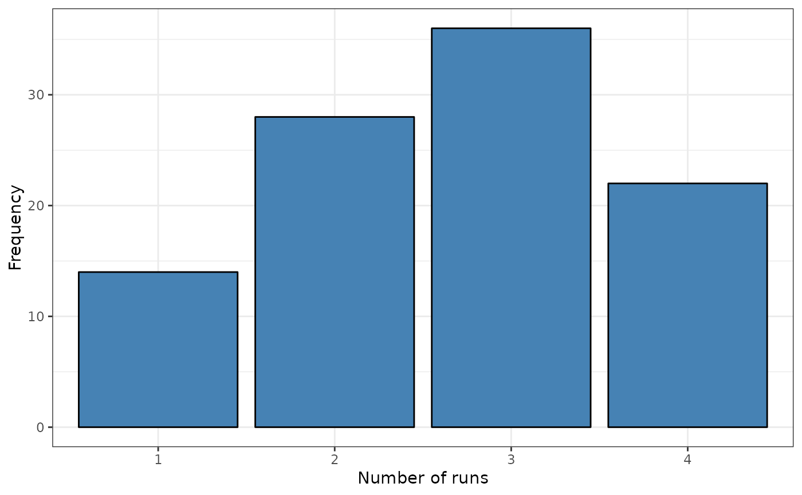

This function compute the global spatial runs test for spatial independence of a categorical spatial data set.
sp.runs.test(formula = NULL, data = NULL, na.action, fx = NULL, listw = listw, alternative = "two.sided" , regular = FALSE, distr = "asymptotic", nsim = NULL,control = list())
Arguments
| formula | a symbolic description of the factor (optional). |
|---|---|
| data | an (optional) data frame or a sf object containing the variable to testing for. |
| fx | a factor (optional). |
| listw | una lista de vecinos (tipo knn o nb) o una matrix W que indique el orden de cada $m_i-entorno$ (por ejemplo de inversa distancia). Para calcular el número de rachas en cada m_i-entorno debe establecerse un orden, por ejemplo del vecino más próximo al más lejano. |
| alternative | a character string specifying the alternative hypothesis, must be one of "two.sided" (default), "greater" or "less". |
| distr | A string. Distribution of the test "asymptotic" (default) or "bootstrap" |
| nsim | Number of permutations to obtain confidence intervals (CI). Default value is NULL to don`t get CI of number of runs. |
| control | List of additional control arguments. |
Value
A object of the htest and sprunstest class
data.name | a character string giving the names of the data. |
method | the type of test applied (). |
SR | total number of runs |
dnr | empirical distribution of the number of runs |
statistic | Value of the homogeneity runs statistic. Negative sign indicates global homogeneity |
alternative | a character string describing the alternative hypothesis. |
p.value | p-value of the SRQ |
pseudo.value | the pseudo p-value of the SRQ test if nsim is not NULL |
MeanNeig | Mean of the Maximum number of neighborhood |
MaxNeig | Maximum number of neighborhood |
listw | The list of neighborhood |
nsim | number of boots (only for boots version) |
SRGP | nsim simulated values of statistic. |
SRLP | matrix with the number of runs for eacl localization. |
Details
El orden de las vecindades ($m_i-entornos$) es crítico.
Para obetener el número de rachas observadas en cada $m_i-entorno$,
cada elemento debe asociarse a un conjunto de vecinos ordenados por proximidad.
Tres clases de listas pueden incluirse para identificar $m_i-entornos$:
knn | Matrices de la clase knn que consideran los vecinos por orden de proximidad.
Ver knn2knn_order |
nb | Si los vecinos se obtienen a partir de un objeto sf, el código internamente llamará
a la función nb2nb_order los ordenará en orden de proximidad de los centroides. |
matrix | Si se introduce simplemente una matriz basasa en la inversa de la distancia,
también se llamará internamente a la función nb2nb_order para transformar la matriz
de la clase matrix a una matriz de la clase nb con vecinos ordenados. |
Two alternative sets of arguments can be included in this function to compute the spatial runs test:
Option 1 | A factor (fx) and a list of neighborhood (listw) of the class knn. |
Option 2 | A sf object (data) and formula to specify the factor. A list of neighborhood (listw) |
Control arguments
seedinit | Numerical value for the seed (only for boot version). Default value seedinit=123 |
See also
Author
| Fernando López | fernando.lopez@upct.es |
| Román Mínguez | roman.minguez@uclm.es |
| Antonio Páez | paezha@gmail.com |
| Manuel Ruiz | manuel.ruiz@upct.es |
@references
Ruiz, M., López, F., and Páez, A. (2010). A test for global and local homogeneity of categorical data based on spatial runs. Geographical Analysis.
Examples
# Case 1: SRQ test based on factor and knn rm(list = ls()) n <- 100 cx <- runif(n) cy <- runif(n) x <- cbind(cx,cy) listw <- knearneigh(cbind(cx,cy), k=3) p <- c(1/6,3/6,2/6) rho <- 0.5 fx <- dgp.spq(listw = listw, p = p, rho = rho) srq <- sp.runs.test(fx = fx, listw = listw) print(srq) #> #> Runs test of spatial dependence for qualitative data. Asymptotic #> version #> #> data: mxf #> sp.runs test = -1.313, p-value = 0.1892 #> alternative hypothesis: two.sided #> sample estimates: #> Total runs Mean total runs Variance total runs #> 271.0000 285.5152 122.2127 #> plot(srq)  # Version boots control <- list(seedinit = 1255) srq <- sp.runs.test(fx = fx, listw = listw, distr = "bootstrap" , nsim = 299, control = control) #> Error in SR_test_boots(fx = yp, listw = listw, nv = nv): unused argument (fx = yp) print(srq) #> #> Runs test of spatial dependence for qualitative data. Asymptotic #> version #> #> data: mxf #> sp.runs test = -1.313, p-value = 0.1892 #> alternative hypothesis: two.sided #> sample estimates: #> Total runs Mean total runs Variance total runs #> 271.0000 285.5152 122.2127 #> plot(srq)# Case 2: SRQ test with formula, a sf object (points) and knn rm(list = ls()) data("FastFood") x <- cbind(FastFood.sf$Lon,FastFood.sf$Lat) listw <- spdep::knearneigh(x, k=4) formula <- ~ Type srq <- sp.runs.test(formula = formula, data = FastFood.sf, listw = listw) print(srq) #> #> Runs test of spatial dependence for qualitative data. Asymptotic #> version #> #> data: Type #> sp.runs test = 3.899, p-value = 9.657e-05 #> alternative hypothesis: two.sided #> sample estimates: #> Total runs Mean total runs Variance total runs #> 3408.000 3216.242 2418.743 #> plot(srq)
# Version boots srq <- sp.runs.test(formula = formula, data = FastFood.sf, listw = listw, distr = "bootstrap", nsim = 199) #> Error in SR_test_boots(fx = yp, listw = listw, nv = nv): unused argument (fx = yp) print(srq) #> #> Runs test of spatial dependence for qualitative data. Asymptotic #> version #> #> data: Type #> sp.runs test = 3.899, p-value = 9.657e-05 #> alternative hypothesis: two.sided #> sample estimates: #> Total runs Mean total runs Variance total runs #> 3408.000 3216.242 2418.743 #> plot(srq) # Case 3: SRQ test (permutation) using formula with a sf object (polygons) and nb rm(list = ls()) library(sf) fname <- system.file("shape/nc.shp", package="sf") nc <- st_read(fname) #> Reading layer `nc' from data source #> `/home/runner/work/_temp/Library/sf/shape/nc.shp' using driver `ESRI Shapefile' #> Simple feature collection with 100 features and 14 fields #> Geometry type: MULTIPOLYGON #> Dimension: XY #> Bounding box: xmin: -84.32385 ymin: 33.88199 xmax: -75.45698 ymax: 36.58965 #> Geodetic CRS: NAD27 listw <- spdep::poly2nb(as(nc,"Spatial"), queen = FALSE) p <- c(1/6,3/6,2/6) rho = 0.5 co <- sf::st_coordinates(sf::st_centroid(nc)) #> Warning: st_centroid assumes attributes are constant over geometries of x nc$fx <- dgp.spq(listw = listw, p = p, rho = rho) plot(nc["fx"]) formula <- ~ fx srq <- sp.runs.test(formula = formula, data = nc, listw = listw, distr = "bootstrap", nsim = 399) #> Warning: st_centroid assumes attributes are constant over geometries of x #> Error in SR_test_boots(fx = yp, listw = listw, nv = nv): unused argument (fx = yp) print(srq) #> Error in print(srq): object 'srq' not found plot(srq) #> Error in h(simpleError(msg, call)): error in evaluating the argument 'x' in selecting a method for function 'plot': object 'srq' not found # Case 4: SRQ test (Asymptotic) using formula with a sf object (polygons) and nb rm(list = ls()) # PARA PROBAR ELEMENTOS SIN VECINOS data(Spain) listw <- spdep::poly2nb(spain.sf, queen = FALSE) plot(spain.sf["Coast"]) formula <- ~ Coast srq <- sp.runs.test(formula = formula, data = spain.sf, listw = listw) #> Warning: st_centroid assumes attributes are constant over geometries of x print(srq) #> #> Runs test of spatial dependence for qualitative data. Asymptotic #> version #> #> data: Coast #> sp.runs test = -4.0173, p-value = 5.887e-05 #> alternative hypothesis: two.sided #> sample estimates: #> Total runs Mean total runs Variance total runs #> 123.00000 160.36571 86.51178 #> plot(srq) # Version boots srq <- sp.runs.test(formula = formula, data = spain.sf, listw = listw, distr = "bootstrap", nsim = 299) #> Warning: st_centroid assumes attributes are constant over geometries of x #> Error in SR_test_boots(fx = yp, listw = listw, nv = nv): unused argument (fx = yp) print(srq) #> #> Runs test of spatial dependence for qualitative data. Asymptotic #> version #> #> data: Coast #> sp.runs test = -4.0173, p-value = 5.887e-05 #> alternative hypothesis: two.sided #> sample estimates: #> Total runs Mean total runs Variance total runs #> 123.00000 160.36571 86.51178 #> plot(srq)
# Case 5: SRQ test based on a distance matrix (inverse distance) rm(list = ls()) N <- 100 cx <- runif(N) cy <- runif(N) data <- as.data.frame(cbind(cx,cy)) data <- st_as_sf(data,coords = c("cx","cy")) n = dim(data)[1] dis <- 1/matrix(as.numeric(st_distance(data,data)),ncol=n,nrow=n) diag(dis) <- 0 dis <- (dis < quantile(dis,.10))*dis p <- c(1/6,3/6,2/6) rho <- 0.5 fx <- dgp.spq(listw = dis , p = p, rho = rho) srq <- sp.runs.test(fx = fx, listw = dis) print(srq) #> #> Runs test of spatial dependence for qualitative data. Asymptotic #> version #> #> data: mxf #> sp.runs test = -1.9166, p-value = 0.05529 #> alternative hypothesis: two.sided #> sample estimates: #> Total runs Mean total runs Variance total runs #> 588.0000 656.5455 1279.0556 #> plot(srq) srq <- sp.runs.test(fx = fx, listw = dis, data = data) print(srq) #> #> Runs test of spatial dependence for qualitative data. Asymptotic #> version #> #> data: mxf #> sp.runs test = -1.9169, p-value = 0.05525 #> alternative hypothesis: two.sided #> sample estimates: #> Total runs Mean total runs Variance total runs #> 588.0000 656.5455 1278.6389 #> plot(srq)
# Version boots srq <- sp.runs.test(fx = fx, listw = dis, data = data, distr = "bootstrap", nsim = 299) #> Error in SR_test_boots(fx = yp, listw = listw, nv = nv): unused argument (fx = yp) print(srq) #> #> Runs test of spatial dependence for qualitative data. Asymptotic #> version #> #> data: mxf #> sp.runs test = -1.9169, p-value = 0.05525 #> alternative hypothesis: two.sided #> sample estimates: #> Total runs Mean total runs Variance total runs #> 588.0000 656.5455 1278.6389 #> plot(srq) # Case 6: SRQ test based on a distance matrix (inverse distance) rm(list = ls()) data("FastFood") n = dim(FastFood.sf)[1] dis <- 1000000/matrix(as.numeric(st_distance(FastFood.sf,FastFood.sf)), ncol = n, nrow = n) #> Warning: bounding box has potentially an invalid value range for longlat data #> Warning: bounding box has potentially an invalid value range for longlat data #> Warning: bounding box has potentially an invalid value range for longlat data #> Warning: bounding box has potentially an invalid value range for longlat data diag(dis) <- 0 dis <- (dis < quantile(dis,.005))*dis p <- c(1/6,3/6,2/6) rho = 0.5 co <- sf::st_coordinates(sf::st_centroid(FastFood.sf)) #> Warning: st_centroid assumes attributes are constant over geometries of x #> Warning: bounding box has potentially an invalid value range for longlat data #> Warning: bounding box has potentially an invalid value range for longlat data FastFood.sf$fx <- dgp.spq(p = p, listw = dis, rho = rho) plot(FastFood.sf["fx"]) #> Warning: bounding box has potentially an invalid value range for longlat data #> Warning: bounding box has potentially an invalid value range for longlat data
formula <- ~ fx # Version boots srq <- sp.runs.test(formula = formula, data = FastFood.sf, listw = dis, distr = "bootstrap", nsim = 299) #> Warning: st_centroid assumes attributes are constant over geometries of x #> Warning: bounding box has potentially an invalid value range for longlat data #> Warning: bounding box has potentially an invalid value range for longlat data #> Error in SR_test_boots(fx = yp, listw = listw, nv = nv): unused argument (fx = yp) print(srq) #> Error in print(srq): object 'srq' not found plot(srq) #> Error in h(simpleError(msg, call)): error in evaluating the argument 'x' in selecting a method for function 'plot': object 'srq' not found